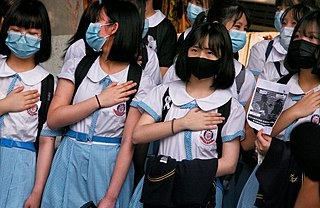

Education in Wong Tai Sin
In Hong Kong, most children can receive pre-school, primary and secondary education. Pre-school education is provided by kindergartens. Attending kindergartens is not free, but the Hong Kong government has been financially supporting parents to pay for the tuition fee in the form of education voucher .
.
For primary and secondary education, a vast majority of children in Hong Kong attend public primary and secondary schools i.e. those heavily subsidized by the government. Most students attend schools near their home, so the children in Wong Tai Sin mostly study in schools in the same district.
The links to schools profiles of different types of schools in Wong Tai Sin are provided below. In each page, it is possible to click on a particular school name to look for more information about it.
 Photo credit: Wikimedia Commons, Honcques Laus